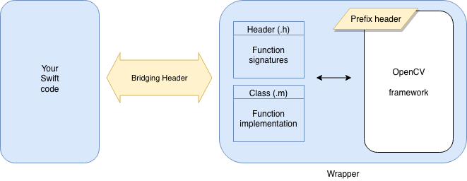
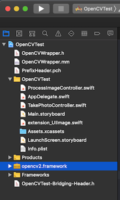

Using OpenCV in an iOS app
Posted on Fri 01 February 2019 in OpenCV
Computer vision is cool tech ... computer vision in an iOS app is even better! In this post, I'll describe how you can integrate and use OpenCV in your Swift-based iOS app. Before we dig in to the process, let's take a look at how the finished integration will work.

As shown in the diagram, you will continue to write most of your app in Swift as you normally would do. The OpenCV framework will be included in your app, inside a wrapper that you'll write. A bridging header will connect your Swift code to the Objective-C / C++ code of OpenCV. (You'll also add a prefix/precompile header to optimize build times.)
Once you've set all that up, you'll be able to make use of OpenCV with Swift code like:
let edged: UIImage = OpenCVWrapper.detectEdges(inRGBImage: your_image)
But we're jumping ahead. There are a few steps to go through to get this all setup. Let's get OpenCV integrated and then I'll go through some usage examples.
Integration overview
At a high-level, you'll need to perform the following steps:
- Add the OpenCV framework to your project
- Create the wrapper
- Create a bridging header
- Create a prefix header
- Implement the OpenCV functionality you need
- Use those methods from Swift
Let's dive in.
Integration steps
First, download and unzip the OpenCV pack:
- Go to https://opencv.org/releases.html
- Find 3.4.4 (or other suitable version) and click the iOS pack link
- Unzip the file to a convenient temporary location
Next, either create or open your Xcode project. You'll want to arrange Xcode and Finder side-by-side and then drag the opencv2.framework bundle (special folder) into the Xcode project tree, at the top level, to add it to your project. Note:
- Make sure Copy items if needed is checked
- Make sure Create folder references is checked
- Make sure Add to targets: your_project is checked

You can close Finder at this point. We'll work in Xcode for the rest of this. Next, we need to create the wrapper around OpenCV. In doing so, we'll also create the bridging header.
- Choose File > New > File
- Create a Cocoa Touch Class file, naming it OpenCVWrapper (or another name if you prefer)
- It should subclass NSOBject
- It should be an Objective-C file
- When prompted, click the Create Bridging Header button
Open the YourApp-Bridging-Header.h file and add this line:
#import "OpenCVWrapper.h"
That's all you'll need to do inside your bridging header. With this simple file in place, you've created a bridge between Objective-C (where you'll write the actual OpenCV code) and Swift (where you'll use it).
Next, we need to make a couple of changes to the OpenCVWrapper.m file. First, change the name of the OpenCVWrapper.m file to OpenCVWrapper.mm. Doing so informs Xcode to treat it as a C++ rather than C file. Then, inside that file, make sure the imports at the top are in this order. If you don't, you will get weird compile errors later.
#import <opencv2/opencv.hpp>
#import "OpenCVWrapper.h"
Finally, we need to set up the prefix header. Again, there's not much that you'll need to do with this file. It will simply tell Xcode to not recompile the already-compiled OpenCV framework to speed up your builds.
- Choose File > New > File
- Scroll to near the bottom and choose PCH File
- Make sure your app is checked in the Targets list
- Click Create
Inside the prefix header, before the closing #endif statement, add:
#ifdef __cplusplus
#include <opencv2/opencv.hpp>
#endif
That is, you're done! Well, you can build the app now and OpenCV is integrated. Of course you've done nothing to implement OpenCV's functions yet. (By the way, you'll get many OpenCV-related build warnings which you can safely ignore. They mostly relate to inline documentation comments being in the wrong format and won't affect your app's execution in any way.)
Implementing an OpenCV function
The basic steps you'll follow to implement an OpenCV function and use it in your app are:
- Add the function signature to the OpenCVWrapper.h file
- Add the function's implementation code in the OpenCVWrapper.mm file
- Call that function in your Swift file
For example, your .h header declares the function and its signature, which might look like this:
#import <Foundation/Foundation.h>
NS_ASSUME_NONNULL_BEGIN
@interface OpenCVWrapper : NSObject
+ (NSString *)openCVVersionString;
@end
NS_ASSUME_NONNULL_END
Your .mm file would have the corresponding function implementation:
#import <opencv2/opencv.hpp>
#import "OpenCVWrapper.h"
@implementation OpenCVWrapper
+ (NSString *)openCVVersionString {
return [NSString stringWithFormat:@"OpenCV Version %s", CV_VERSION];
}
@end
Per Objective-C syntax, the + indicates a class method; use - to indicate an instance method. The difference is probably inconsequential since there will only ever be one instance of your OpenCVWrapper class. So, you can probably use + to prefix all of your functions as shown above.
OK, so let's use this powerful new OpenCV capability. In your main ViewController.swift file, update viewDidLoad to call that new function:
override func viewDidLoad() {
super.viewDidLoad()
print("\(cv2.openVersionString())")
}
Build to a simulator and watch the Xcode debug console and you should see OpenCV Version 3.4.4 there. Congratulations, you've integrated OpenCV into your iOS app.
A better example
I've created a simple project so that you can explore something a little more meaningful. This app lets you take a picture (so you'll need to run it on a device) and then apply some OpenCV manipulations.
- Download the OpenCVTest Xcode project.
- Update the project properties with your organization / app-signing profile.
- Download and drag the opencv2.framework bundle into the Xcode project tree (it's too big to include in my zip file). I used OpenCV 3.4.4 and any of the 3.x version should work. But I haven't tested with 4.x, so YMMV.
- Build the app to a device. The app should be fairly self-explantory.
Make sure to explore the .h and .mm files, as well as the ProcessImageController.swift file in this project. Also check out the UIImage extension. Together, these should give you a good start on writing your own OpenCV functionality.
Closing thoughts
You'll need to write your OpenCV code in Objective-C (that's what's in the .mm file). But as best as I can tell, there is no specific OpenCV-for-iOS documentation. For the most part, any C++ OpenCV sample code you find will work without much modification. From there, I'm sorry to say you'll have to turn to StackOverflow and Google and hope.
I've found OpenCV's functions to be typically much faster than the equivalent Swift implementations. For example, converting an image to grayscale is considerably faster with OpenCV. But test, because some OpenCV operations are slower, sometimes surprisingly so. Blurring an image, for example, is many times faster in Swift than in OpenCV.
But, avoid passing images back-and-forth between Swift and OpenCV. You'll need to change data formats (e.g. from OpenCV Mat to UIImage or CIImage) which can be quite slow and you may encounter memory leaks. Instead, do all the processing you can in one layer or the other and pass only the final result between layers.
Images you capture from an iPhone (and presumably iPad) camera can be appear to be turned upside-down by OpenCV. In fact, it's just a different way of handling the orientation information in the files. Check out the UIImage extension that I've included in the sample project above. As you'll see in that project, you can get a correctly oriented portrait image by simply accessing the normalized property of the image, like this: OpenCVWrapper.convert(toGrayscale: img.normalized!)
Good luck and have fun building great OpenCV vision-enabled iOS apps!